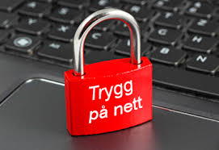
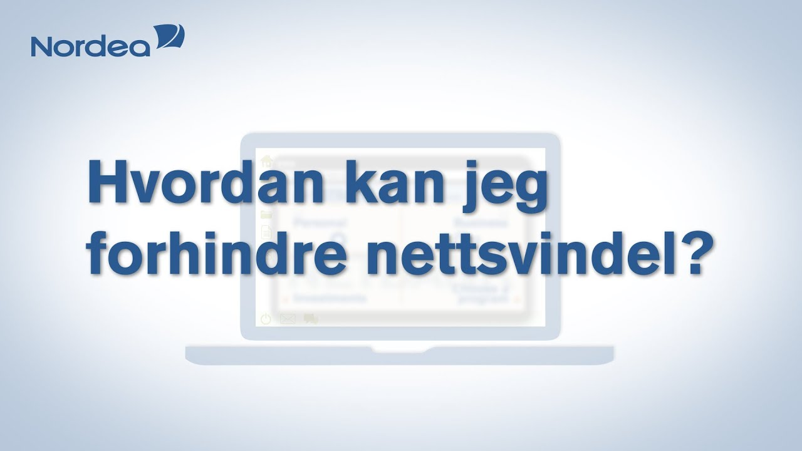

Truslar i det digitale rom
I de siste tiårene har samfunnet gjennomgått en omfattende digitalisering. Den har endret verden rundt oss, og den fortsetter å endre verden rundt oss, mer og mer. Dette gjelder både de mulighetene vi har og truslene vi står ovenfor i det som ofte kalles det digitale rom. Digitaliseringen gjør oss ofte mer effektive, og det betyr at vi kan bruke ressursene og tiden vår på andre ting enn manuelle opperasjoner og prosesser. samtidig har vi gjort oss sårbare for nye typer trussler på områder som vi tidligere ikke trengte å bekymre oss for. Den viktigeste grunnen til at digital sikkerhet er blitt mye viktigere i samfunnet i senere år er at vi både som enkeltmennesker og som samfunn har gjort oss helt avhengige av digitale tjenester. vi trenger dem for å fungere.

